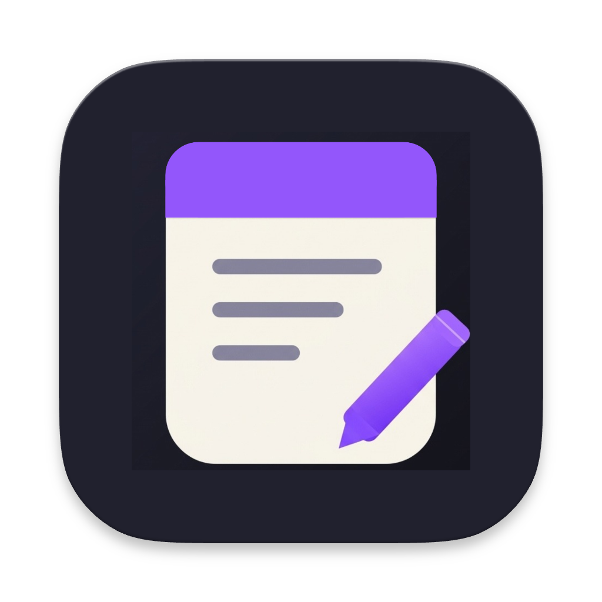

A note from anywhere
Open quicknote with ⌥Q. It floats above your other apps, including macOS full-screen Spaces.

quicknote DownloadA SMALL NOTE, A SHORTCUT AWAY
A quiet, native notes app for macOS. Open a floating quicknote from anywhere, or settle into a full Notepad when you need more room.


MADE TO STAY OUT OF THE WAY
Open quicknote with ⌥Q. It floats above your other apps, including macOS full-screen Spaces.
Open the full Notepad with ⇧⌥Q for longer thoughts, plans, or drafts.
quicknote and Notepad save independently on your Mac. They work offline and your notes are never uploaded.
READY WHEN YOU ARE
quicknote stays in the menu bar, so the shortcuts are there even when its windows are closed. Turn on Open at Login from the menu bar when you want it ready after restart.
GET STARTED
Download quicknote for macOS 13 or later. Your two notes are saved locally and stay separate.
Download v1.4 From GitHub Releases ↗Polished UI and bug fixes.
The app is ad-hoc signed and not notarized by Apple. If macOS blocks the first launch, review the notice in System Settings → Privacy & Security.